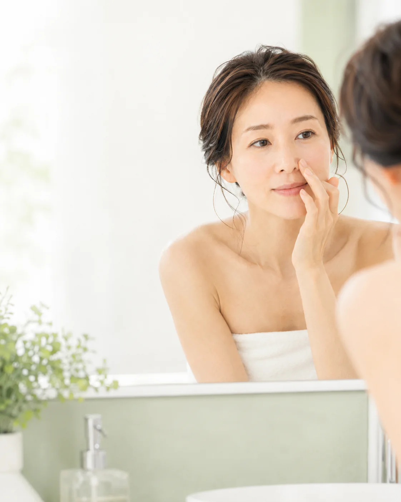
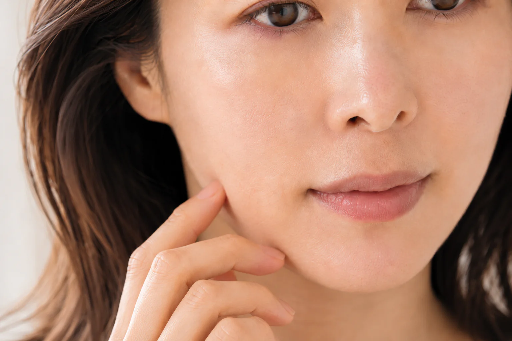
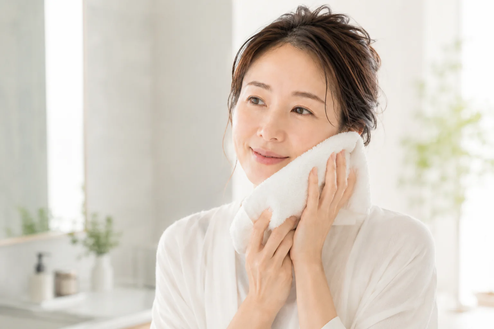

酵素で選ぶ
角栓やざらつきが気になる日に使うパウダーを比較します。
PORE WASH EDIT
酵素パウダー、泥スクラブ、泡立てないジェルを比較。毎日使える表示でも、乾燥や刺激を感じたら使用頻度を調整します。

HOW TO CHOOSE
毛穴ケアは、毎日落としすぎないことまで含めて選びます。
角栓やざらつきが気になる日に使うパウダーを比較します。
皮脂吸着や泡立て不要など、使用感の違いを整理します。
乾燥や刺激を感じたら、毎日ではなく頻度を調整します。

SKIN CONCERN
ざらつきや皮脂が気になる一方で、洗いすぎによる乾燥も避けたいもの。酵素・泥・ジェルなど、特徴の違いを整理します。
今の肌を知ることが、選び方の第一歩です。
AFTER THE EDIT
毎日使えるもの、週数回取り入れるもの。肌状態に合わせて無理なく続けられる洗顔料を選びます。
すっきり感と、やさしい洗い上がりを両立。QUICK COMPARISON
| 商品 | 容量 | 参考価格 | タイプ | 選び方 |
|---|---|---|---|---|
| FANCL ディープクリア洗顔パウダー | 30個 | 1,980円〜 | 酵素パウダー | 個包装で使いたい |
| suisai ビューティクリア パウダーウォッシュN | 0.4g×32個 | 販売ページで確認 | 酵素パウダー | 2つの酵素で選びたい |
| オバジC 酵素洗顔パウダーDP | 0.4g×30個 | 販売ページで確認 | 酵素パウダー | ビタミンC配合で選びたい |
| KANEBO スクラビング マッド ウォッシュ | 130g | 販売ページで確認 | 泥スクラブ | ペーストの吸着感が欲しい |
| LUNASOL ポリッシングクリアジェルウォッシュ | 150g | 3,850円〜 | ジェル | 泡立てず朝も使いたい |
PRODUCT NOTES
酵素・炭・クレイを配合した1回使い切りタイプ。十分に泡立てて使います。
プロテアーゼとリパーゼ、アミノ酸系洗浄成分を配合。1カプセルを泡立てます。
ビタミンCと2種類の酵素を配合したパウダー洗顔。1回1カプセルが目安です。
泥とスクラブを配合。通常洗顔と、週1回程度の部分マスク洗顔の2通りで使えます。
2026年3月発売の泡立てないジェル洗顔。濡らした顔になじませて洗い流します。